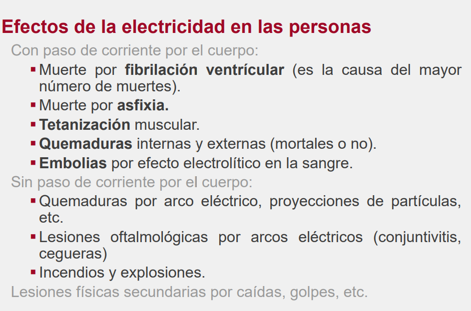
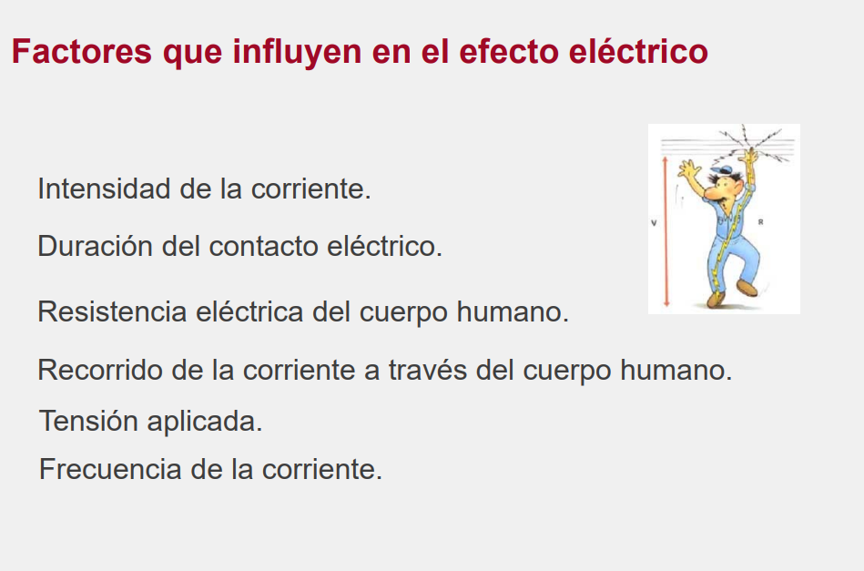
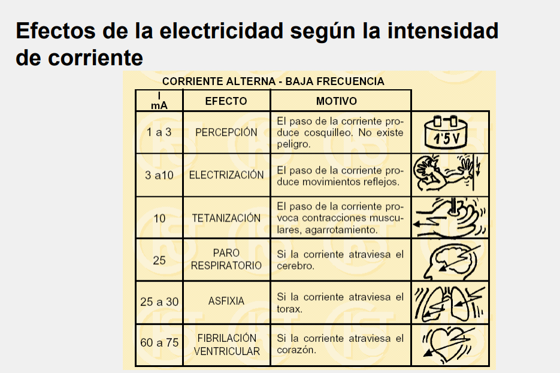
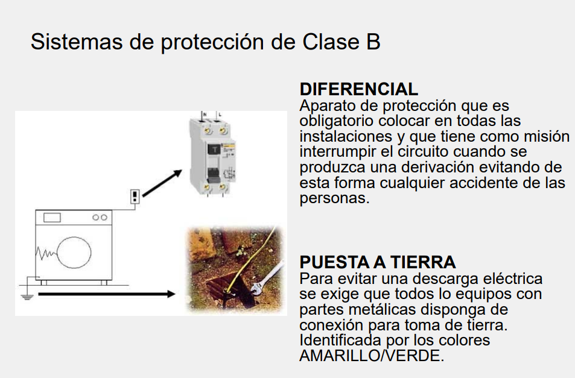
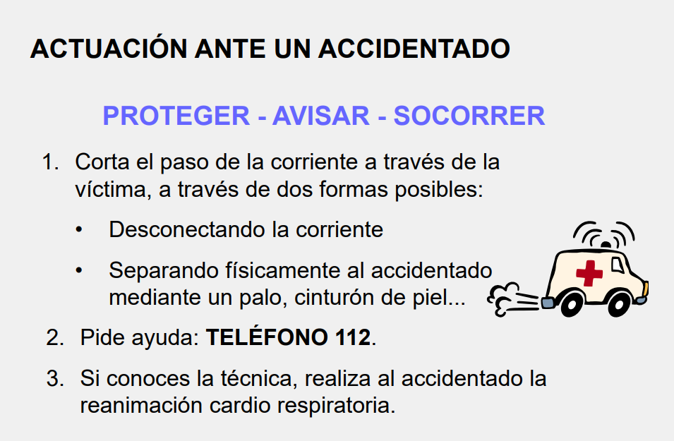
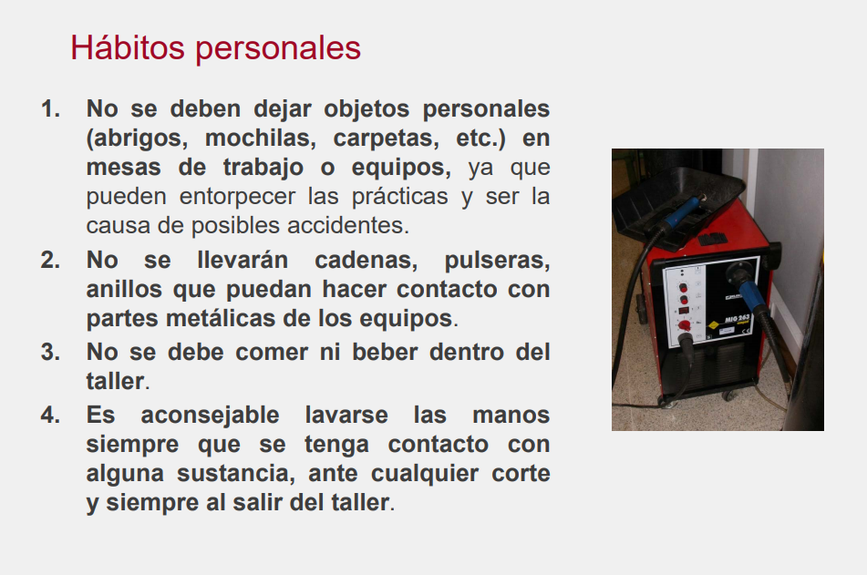
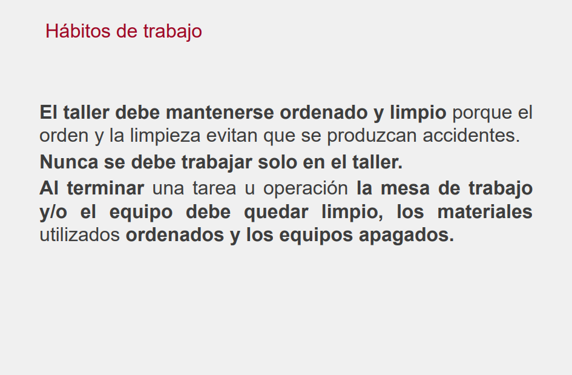
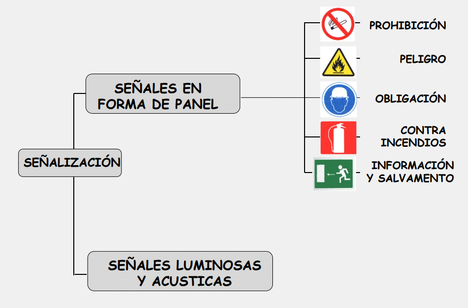

Para prevenir accidentes vamos a repasar algunas medidas de seguridad que tendremos en cuanta a la hora de realizar las prácticas:








Trabajo Práctico y Evaluación
Para abrobar esta clase debe saber reconocer todas las señalizaciónes presentes en el aula y en la escuela.
Utilizando la cámara de su celular debe tomas fotos de al menos dos señales de los tipos vistos en esta clase, que estén fuera de la institución. Esta actividad se puede hacer en grupo de no mas de tres integrantes.